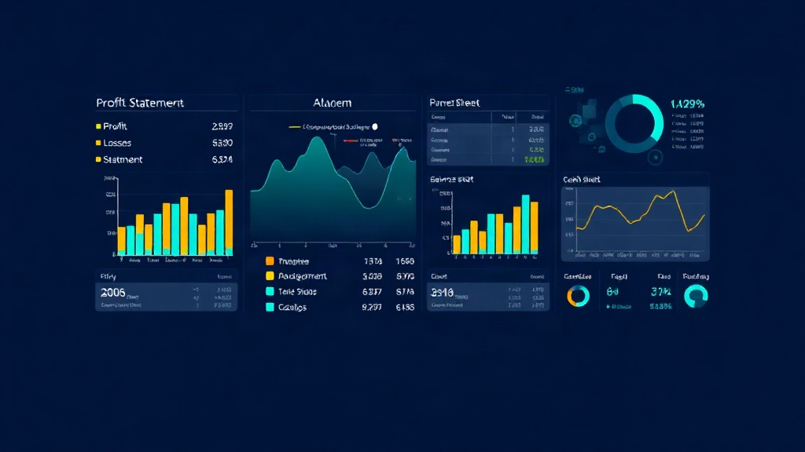
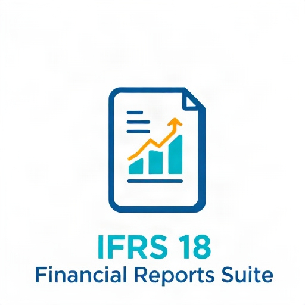

IFRS 18 Financial Reports Suite provides six dynamic financial statements compliant with IFRS 18 presentation requirements, built specifically for Odoo Community Edition. Generate professional Profit & Loss, Balance Sheet, Cash Flow Statement, Statement of Changes in Equity, Trial Balance, and Partner Ledgers — all with drill-down capability, date filtering, period comparisons, and multi-format export.
account module (installed by default with Accounting)openpyxl Python package (for Excel export)ai_ifrs18_financial_reports folder to your Odoo addons directory.$100.00 USD — One-time purchase. Includes full source code and future updates.
LGPL-3